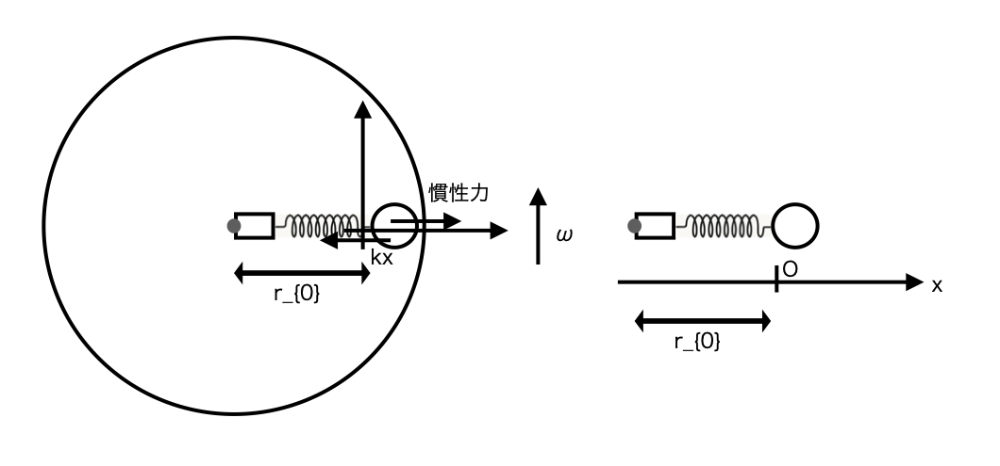

慣性系とはその座標系での物理量を用いて運動方程式が成り立つ系のことで、
慣性系かは実験で測定して分かる。
\( a = \dfrac{\Delta v}{\Delta t} \)
例:地上や太陽系

台に対する初速\( \ v_{0} \ \)で質量mの球が摩擦のある台上を動く。台は加速度aで移動しており、
球が台に対して静止するまでの台に対する移動距離を考える。
動摩擦係数はμとする。
\( mA = -\mu N \)
\( N = mg \)
\( mA = -\mu N \Leftrightarrow mA = -\mu mg \)
\( \Leftrightarrow m(a + a_{台→球}) = -\mu mg \Leftrightarrow
ma_{台→球} = -\mu mg - ma \)
台からみた時、球が運動方程式を満たすようにするには、
慣性力maが加速度aの逆向きに働かなくてはならないことを示している。
つまり、実際に働いているだけの力のみの方程式\( \ ma_{台→球} = -\mu mg \ \)
では実際に台から球の挙動を調べた時のものと矛盾すると思われる。
なぜなら台の座標系は慣性系ではないからで、実際の力のみでは運動を示すことはできない。
台とともに動く座標系で考えると、\( \ \Delta E = \Delta W_{非保存力} \ \)より、
\( 0 - \dfrac{1}{2}mv_{0}^2 = -m(\mu g + a)\Delta x_{台→球} \)
\( \Delta x_{台→球} = \dfrac{v_{0}^2}{2(\mu g + a)} \)
角速度ωで回転する円盤上にバネ定数kのバネがあり、先に質量mの球かつけられ自然長の時、円盤の中心
からの距離は\( \ r_{0} \ \)で、時刻t=0でAだけ伸ばして離した後の運動について、
自然長の位置を原点とする座標系Cでは、

円盤中心から球向きの運動方程式は、
\( ma_{C→球} = -kx + mr_{0}\omega^2 \)
\( \Leftrightarrow a_{C→球} = -\dfrac{k}{m}(x - \dfrac{mr_{0}\omega^2}{k})
\Leftrightarrow x = (A - \dfrac{mr_{0}\omega^2}{k})\cos\sqrt{\dfrac{k}{m}}t + \dfrac{mr_{0}\omega^2}{k} \)